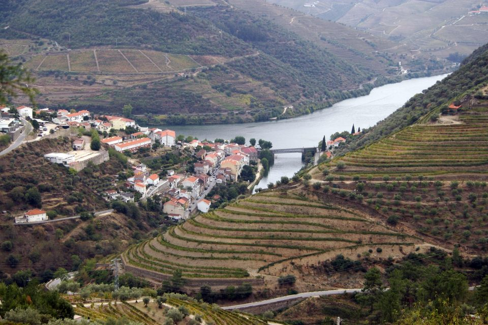

Portugal · Douro
Douro Valley audio guide
4 stops · Douro · offline · plays as you arrive
This guide is Free in the app when it launches. Checkout is not open yet; this button is a placeholder. Email hello@getearwise.com.
An audio guide to the Douro Valley. The signed script has 4 stops. It works offline, in 10 languages, and plays as you arrive.
Stops
- 1
Peso da Régua and the Douro Museum
On the riverside terrace in front of the Douro Museum at Peso da Régua.
Play0:00 / –:––Read along
Peso da Régua is the gateway town of the Douro wine country, and the Douro Museum here tells the story of the region and its wines.
The museum fills the Casa da Companhia, an eighteenth-century building that was the headquarters of the company the crown created in 1756 to control the making and trade of Port wine. It was restored and opened as the museum in 2008. Its permanent exhibition, currently displayed under the title Douro: Matter and Spirit, introduces the region's landscape, its vineyards and its wine.
The story behind that company begins in the seventeenth century, when Douro wine started to be exported in large quantities, above all to England. Wine called "Port" is recorded as early as the 1670s. In 1703 the Methuen Treaty between Portugal and England gave Portuguese wines lower duties in England than French wines, and the trade boomed. British merchants settled in Porto and stored and aged the wine in their lodges at Vila Nova de Gaia, across the river from the city. Brandy was added to the wine, and this fortified wine kept well on long sea voyages.
High profits brought fraud and adulterated wine, and the trade fell into crisis. On 10 September 1756, under King José the First and his minister, the future Marquis of Pombal, a royal charter created the General Company of Agriculture of the Vineyards of the Upper Douro. Its task was to protect the quality of the wine and to limit British control of the trade. The company marked out exactly which land could produce Port, and it also ranked the vineyards. The best wines, called feitoria wines, were reserved for export to Britain and northern Europe. For this reason the Douro is counted among the earliest wine regions in the world to be officially demarcated and regulated.
Until 1986, when Portugal joined the European Economic Community, Port could be exported only from the lodges of Vila Nova de Gaia. For centuries, the wine left the valley by river, in flat-bottomed wooden boats called rabelos. They carried the barrels down to Vila Nova de Gaia, with a square sail and a long steering oar at the stern. After the railway reached the valley and dams were built on the river, they went out of use, but rabelos still race on the river in Porto every year on Saint John's Day, the twenty-fourth of June.
- 2
The Vineyard Slopes
At the Miradouro de São Leonardo de Galafura, high above the river.
Play0:00 / –:––Read along
The Douro vineyards fall away in terraces below the Miradouro de São Leonardo de Galafura, which stands at about 640 metres. Here, beside a small chapel, a tile panel carries words by the Portuguese writer Miguel Torga, who was born a few kilometres away. Looking at this view, he wrote that it is "not a panorama that the eyes contemplate: it is an excess of nature", "a geological poem".
The Douro and its tributaries, the Varosa, the Corgo, the Távora, the Torto and the Pinhão, cut deep valleys through the mountains. The ranges of Marão and Montemuro shelter them from the Atlantic winds, so summers here are hot and dry, and winters cold.
Wine has been made here for about two thousand years. The vines for Port grow mostly on schist, a hard layered rock, while granite soils are used for table wine. To farm such steep slopes, generations of growers built terraces by hand, held up by walls of stone. In the second half of the nineteenth century the vine pest phylloxera devastated the vineyards, and many were rebuilt with the long, regular terraces found on many of the slopes today.
The oldest terraces, from before phylloxera, are narrow ledges that follow the contour of the hill, with room for only one or two rows of vines, held up by low walls of schist laid without mortar. The terraces built after the pest are wider, with more rows. Later, machines cut broad terraces with banks of earth instead of walls, called patamares, and on the gentler slopes vines were planted in rows running straight up the hill, a method called vinha ao alto.
The region is divided into three parts, from west to east. The Baixo Corgo is the mildest and wettest. The Cima Corgo, around Pinhão, holds most of the famous estates. The Douro Superior, the hottest and driest, runs east to the Spanish border.
Port is a blend of many grape varieties, most of them native to Portugal.
What makes Port different from other wines happens at the harvest. The fermentation is stopped early by adding a neutral grape spirit, so that some of the grapes' natural sugar stays in the wine. The result is a sweet wine, stronger than ordinary wine, usually between nineteen and twenty-two per cent alcohol.
Then comes the ageing. Ruby Ports are aged for a short time in large vats, so they keep their deep red colour and fresh fruit. Tawny Ports spend longer in smaller wooden casks, where contact with the air turns them amber and gives them flavours of nuts and dried fruit. The finest carry an age on the label, ten, twenty, thirty or forty years, and a Colheita is a tawny from a single harvest.
In 2001 UNESCO listed the Alto Douro Wine Region as a World Heritage cultural landscape, shaped by a long tradition of winegrowing.
- 3
Pinhão Station
On the platform of Pinhão railway station.
Play0:00 / –:––Read along
Pinhão station is decorated with azulejos showing the landscapes of the Douro and the grape harvest.
The Douro railway line reached Régua in 1879 and Pinhão in 1880. Three years later it was extended upstream to Tua, and in 1887 it ran on along the river to Pocinho and, the same year, to the Spanish border at Barca d'Alva. For most of its length the line follows the valley of the Douro itself. The last stretch, from Pocinho to Barca d'Alva, closed in 1988, and Pocinho is again the end of the line today. The railway slowly took the wine trade away from the river boats. The station became one of the main depots for shipping the wine of the Douro.
In 1935 the Port Wine Institute offered the tiles to decorate the station and promote the town, and they were put up in 1937. There are twenty-four panels, painted in blue and made by the Aleluia factory in Aveiro. They show the landscapes and the traditional work of the region, above all the cultivation of the vines and the harvest.
Pinhão sits on the north bank of the river at the heart of the Port wine region, surrounded by wine estates, the quintas. The town itself is young as a parish: it was created only in 1933, from land that had belonged to the parish of Casal de Loivos on the slope above.
- 4
Casal de Loivos
In the village of Casal de Loivos, on the slope above Pinhão.
Play0:00 / –:––Read along
Casal de Loivos is a small village high on the slope above the Douro, near Pinhão.
The village belongs to the municipality of Alijó. Its history is old. On a schist hilltop above the river, are the remains of a fortified settlement known as the Cerca of Casal de Loivos, one of many ancient hillforts recorded across the municipality. In 2013 its parish was merged with its neighbours, Vale de Mendiz and Vilarinho de Cotas.
From the heights here the cultural landscape that UNESCO describes is laid out on the slopes: terraced vineyards running row upon row along the valley sides, and the river below. The Douro quintas are its major landmarks, each a main house surrounded by farm buildings and wineries, and they cluster most thickly here, in the Cima Corgo and further upstream. White-walled villages stand midway up the valley sides, often gathered around an eighteenth-century parish church, and small chapels stand high on the hills.
Casal de Loivos lies in the Cima Corgo, the subregion centred on Pinhão that holds the majority of the famous quintas and is considered the heart of Port production.